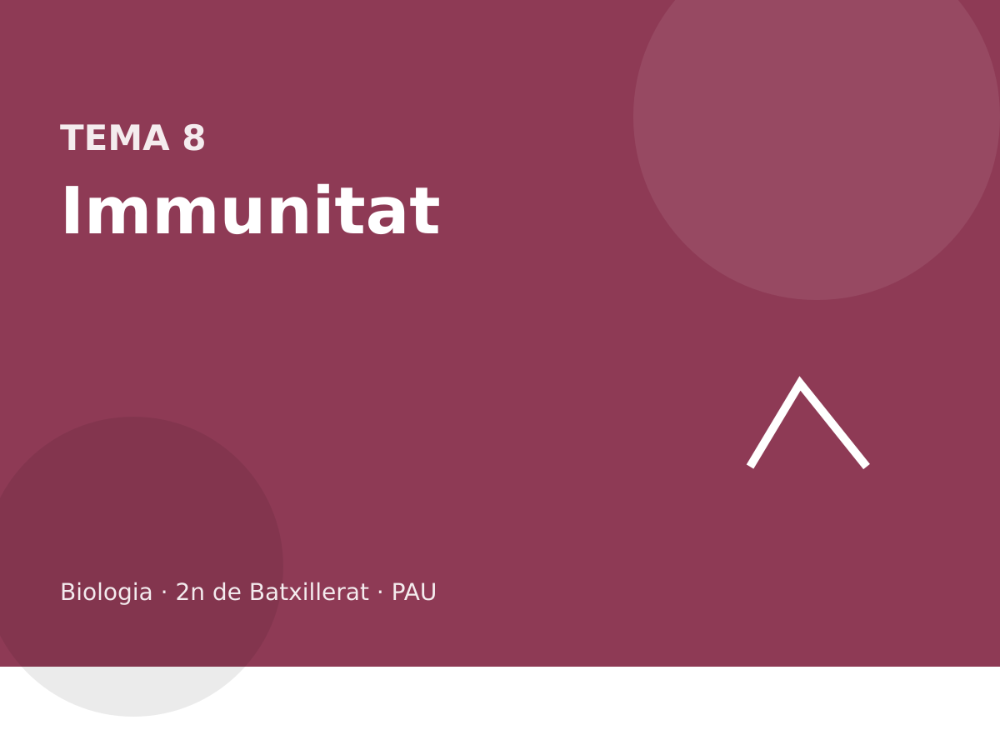

Immunologia

Immunitat innata i específica, anticossos, limfòcits, vacunes, al·lèrgies, autoimmunitat i VIH.
Què entra a la PAU
Cal el concepte d’immunitat i els elements que citen les orientacions: tim i melsa; medul·la òssia i teixit limfoide; neutròfils, eosinòfils, basòfils, monòcits, macròfags, cèl·lules dendrítiques, limfòcits T, B i NK. Les barreres externes es separen en físiques, químiques i biològiques. La immunitat innata es distingeix de l’específica, i la humoral de la cel·lular.
De l’específica entren les cèl·lules presentadores, els T col·laboradors i citotòxics, els B, les cèl·lules plasmàtiques, la memòria, els anticossos i les molècules d’histocompatibilitat de classe I i II, i la comparació entre resposta primària i secundària. El complement té tres vies. Immunitat activa i passiva, natural i artificial, vacunes i immunitat de grup, seroteràpia i immunoteràpia, fases de la malaltia infecciosa, i les patologies: rebuig, transfusions, al·lèrgia, autoimmunitat, leucèmies, immunodeficiències i sida.
8.1 Immunitat i barreres
La immunitat és la capacitat de distingir el que és propi del que és estrany i de respondre-hi. Els òrgans que cal situar són el tim (on maduren els limfòcits T) i la melsa. Els teixits són la medul·la òssia, on es formen les cèl·lules de la sang, i el teixit limfoide (ganglis, amígdales, plaques de Peyer). Les cèl·lules de la llista oficial són neutròfils, eosinòfils, basòfils, monòcits, macròfags, dendrítiques, limfòcits T, limfòcits B i limfòcits NK.
Abans de tot això hi ha les barreres. Físiques o anatòmiques: pell i mucoses. Químiques o fisiològiques: el pH de l’estómac, el lisozim de la llàgrima i la saliva, el mucus. Biològiques: la microbiota, que ocupa lloc i consumeix nutrients. Una ferida o un antibiòtic innecessari obren un forat en aquesta primera línia.
La immunitat és la capacitat de distingir el propi del que no ho és i de respondre. La primera línia no és encara cel·lular especialitzada: la pell, les mucoses, el pH de l’estómac, el lisozim de les llàgrimes i la microbiota. Es diuen barreres. No tenen memòria. Si es foraden, entra en joc la resposta innata i, si cal, l’específica. Una ferida no «activa els anticossos» al primer minut: activa la inflamació.
El pH àcid de l’estómac mata molts bacteris ingerits. És immunitat específica?
No. És una barrera inespecífica: no distingeix soques, no deixa memòria i no hi intervenen limfòcits. Un patogen que la travessa encara ha d’enfrontar-se a la innata i a l’específica. Vacunar no reforça el pH de l’estómac.
Una cremada extensa es complica amb infeccions de bacteris que a la pell sana no prosperen. Quina barrera ha caigut, i per què l’antibiòtic no la substitueix del tot?
La pell, barrera física i química. L’antibiòtic mata o frena bacteris sensibles, però no refà l’epiteli, no cobreix tots els microorganismes i selecciona resistents. La barrera evita l’entrada; el fàrmac n’apaga una part un cop ja han entrat.
Ordeneu el que troba un bacteri que entra per una ferida: pell, fagòcits i complement, limfòcits específics. Quina d’aquestes línies té memòria?
Primer la pell, que ja ha fallat si ha entrat. Després la innata: fagòcits, inflamació, complement. Després l’específica, que tarda dies la primera vegada. Només l’específica deixa memòria. La inflamació del segon dia no és més ràpida perquè el bacteri sigui el mateix; els anticossos i els limfòcits de memòria, sí.
El lisozim de la saliva trenca peptidoglicà. És un anticòs?
No. És una enzima de barrera, inespecífica: no es fabrica contra un antigen concret i no canvia de forma segons el bacteri. Un anticòs és una immunoglobulina feta per un clon de B. Que tots dos danyin bacteris no els fa el mateix.
8.2 Immunitat innata i complement
La immunitat innata no és específica d’un antigen concret i no deixa memòria. Els neutròfils i els macròfags (que venen dels monòcits) fagociten. Les cèl·lules dendrítiques també fagociten i, a més, presenten l’antigen a la resposta específica. Els basòfils i els mastòcits alliberen histamina i participen en la inflamació. La histamina no és un anticòs. Els eosinòfils actuen sobretot contra paràsits i en algunes al·lèrgies. Els limfòcits NK maten cèl·lules infectades o tumorals que no presenten bé les molècules de classe I.
El complement és un conjunt de proteïnes del plasma. La via clàssica s’engega amb anticossos units a l’antigen. L’alternativa s’engega a la superfície de molts patògens, sense anticossos. La de les lectines s’engega quan una lectina del plasma reconeix manoses de la paret microbiana. Les tres convergeixen. Els efectes que cal saber són l’opsonització (marcar per fagocitar), la inflamació i el complex d’atac a la membrana, que forada alguns bacteris. No cal la llista numerada de les proteïnes.
Un text diu: «La histamina és l’anticòs de la inflamació i la secreten els mastòcits i els eosinòfils». Trobeu les dues errades.
La histamina no és un anticòs: és una molècula petita. La secreten sobretot mastòcits i basòfils, no els eosinòfils. Els eosinòfils intervenen en paràsits i en algunes al·lèrgies, però no són la font principal d’histamina.
Innata i específica
| Innata | Específica | |
|---|---|---|
| Especificitat | patrons generals | un antigen concret |
| Memòria | no | sí |
| Temps | minuts o hores | dies la primera vegada |
| Cèl·lules clau | neutròfils, macròfags, dendrítiques, NK, mastòcits | limfòcits T i B |
| Molècules | complement, histamina | anticossos, receptors T i B |
La resposta innata és ràpida i no específica d’un antigen concret. La inflamació (enrogiment, calor, tumor i dolor) és vasodilatació i arribada de neutròfils i de proteïnes del plasma. Els macròfags fagociten i presenten antigen. Les cèl·lules NK maten cèl·lules que no mostren bé el MHC I, un senyal de virus o de tumor, sense l’especificitat d’un limfòcit T. El complement és un conjunt de proteïnes del plasma que s’activen en cascada, fan porus a bacteris i atrauen fagòcits. No és un orgànul.
Cap d’aquests mecanismes no millora la segona vegada que entra el mateix microorganisme. La memòria és de l’específica. La innata sí que és necessària per engegar-la: sense presentació d’antigen, els T no s’activen bé.
Un pacient sense neutròfils funcionals fa infeccions bacterianes repetides des de la infància, i els seus limfòcits en cultiu responen bé a un antigen. Quina branca falla?
La innata, la fagocitosi. L’específica es conserva, perquè els limfòcits responen. Les infeccions repetides des del principi, sense el patró d’una sola malaltia que reapareix, encaixen amb una falla de la primera línia cel·lular, no amb una falta de memòria.
La histamina dels mastòcits dilata vasos i fa la reacció al·lèrgica. Forma part de l’específica?
El mastòcit i la histamina són mecanismes de la innata. A l’al·lèrgia, un anticòs IgE (que sí que és de l’específica, fet per un limfòcit B) els ha deixat sensibilitzats. L’encreuament és el que confon. La histamina no és un anticòs, i no té memòria per si sola.
Els símptomes locals d’una inflamació són enrogiment, calor, inflor i dolor. Quin canvi vascular els explica, i per què no són encara una resposta específica?
La vasodilatació i la sortida de plasma i de neutròfils al teixit. Arriben més sang (enrogiment i calor) i més líquid (inflor), i els mediadors irriten les terminacions (dolor). No és específica perquè els mateixos signes apareixen davant de bacteris diferents, d’un cop o d’una cremada. No hi ha clon ni memòria en aquest pas.
El complement fa un porus en un bacteri. Per què no en fa un, en condicions normals, en una cèl·lula del propi cos?
Perquè les cèl·lules pròpies tenen proteïnes de membrana que aturen la cascada. El bacteri no les té. Si aquest control falla, hi ha dany propi. El complement no «decideix»: s’activa on hi ha superfície sense aquestes proteïnes, o on un anticòs l’ha marcat.
8.3 Immunitat específica
L’específica (adaptativa, adquirida) reconeix antígens concrets i deixa memòria. Un antigen és allò que el sistema reconeix com a estrany; l’epítop és la part exacta que encaixa amb el receptor. El que és propi no hauria d’activar la resposta: quan ho fa, hi ha autoimmunitat.
Les cèl·lules presentadores (macròfags, dendrítiques i també els limfòcits B) mostren trossos d’antigen units a molècules d’histocompatibilitat. Les de classe I són a totes les cèl·lules nucleades i presenten el que hi ha dins la cèl·lula: les llegeixen els limfòcits T citotòxics (CD8), que maten la cèl·lula infectada. Les de classe II són a les presentadores i les llegeixen els T col·laboradors (CD4), que activen B i macròfags. En humans aquestes molècules són les HLA; a la prova n’hi ha prou amb classe I i classe II.

Els limfòcits B, quan el T col·laborador i l’antigen els activen, es diferencien en cèl·lules plasmàtiques, que secreten anticossos, i en cèl·lules de memòria. Això és la selecció clonal: només es multiplica el clon que reconeix aquell antigen. La branca humoral són els anticossos. La cel·lular són els T.
Limfòcits B i T
| B | T col·laborador (CD4) | T citotòxic (CD8) | |
|---|---|---|---|
| Reconeix | antigen sencer | pèptid + MHC II | pèptid + MHC I |
| Efecte | esdevé plasmàtica i fa anticossos | activa B i macròfags | mata la cèl·lula infectada |
| Branca | humoral | cel·lular (ajuda) | cel·lular |
Els T col·laboradors no secreten anticossos. Si un text ho diu, és una errada. Qui secreta anticossos és la cèl·lula plasmàtica.
L’específica és clonal. Cada limfòcit porta un receptor diferent, fet per recombinació de segments gènics, abans de veure l’antigen. L’antigen no dissenya el receptor: selecciona el clon que ja encaixava i el fa proliferar. Això és la selecció clonal. Els que encaixen amb el propi s’eliminen o s’inactiven durant la maduració; si aquest control falla, hi ha autoimmunitat.
Els B reconeixen l’antigen sencer i, amb ajuda dels T col·laboradors, es diferencien a cèl·lules plasmàtiques, que secreten anticossos, i a cèl·lules de memòria. Els T no secreten anticossos. Els T col·laboradors (CD4) reconeixen un pèptid presentat en MHC II, propi de cèl·lules presentadores, i activen B i macròfags. Els T citotòxics (CD8) reconeixen un pèptid en MHC I, que tenen gairebé totes les cèl·lules, i maten la cèl·lula infectada. MHC II no és «el dels citotòxics».
Un virus es replica dins el citoplasma d’una cèl·lula epitelial, que no és una presentadora professional. Quin limfòcit la pot matar, i quin MHC fa servir la cèl·lula per ensenyar els pèptids vírics?
Un T citotòxic CD8, que reconeix el pèptid en MHC I. Gairebé totes les cèl·lules amb nucli tenen MHC I precisament per poder avisar d’una infecció interna. El MHC II seria el d’una cèl·lula presentadora que ensenya antigen a un CD4. L’anticòs, fora de la cèl·lula, no arriba al virus que ja és a dins.
Per què la resposta específica tarda dies la primera vegada i no la segona?
Perquè la primera vegada el clon útil és rar i s’ha d’expandir: selecció clonal i diferenciació. Queden cèl·lules de memòria, molt més nombroses i més fàcils d’activar. La segona resposta puja abans, més alt i amb més IgG. No és que l’antigen «ja es conegui» en abstracte: hi ha més cèl·lules concretes que el reconeixen.
Un pèptid víric es presenta en MHC I. Quin limfòcit l’ha de reconèixer, i què li passa a la cèl·lula que el presenta? I si el pèptid fos en MHC II, a la superfície d’un macròfag?
En MHC I el reconeix un T citotòxic CD8, que mata la cèl·lula infectada. En MHC II el reconeix un T col·laborador CD4, que no mata el macròfag: l’activa i ajuda els B. El mateix pèptid, en un MHC o en l’altre, no convoca la mateixa cèl·lula. L’error és assignar el CD8 al MHC II.
L’antigen selecciona el clon. Per què no es diu que l’antigen crea el receptor?
Perquè el receptor ja existia, fruit de la recombinació dels gens del limfòcit, abans de trobar l’antigen. L’antigen fa proliferar el clon que encaixa i deixa morir o inactius els que no. És selecció, en el mateix sentit que la selecció natural: no instrueix, filtra. Un receptor fet a mida després de veure l’antigen no és el model.
Una cèl·lula infectada per un virus deixa de mostrar MHC I. Quina cèl·lula de la innata la pot matar precisament per això, i quina de l’específica la mataria si el MHC I sí que mostrés el pèptid?
Sense MHC I, la cèl·lula NK, que interpreta l’absència com un senyal de perill. Si el MHC I mostra el pèptid, el T citotòxic CD8 la reconeix i la mata. Són dues vies cap a un resultat semblant, amb receptors diferents. La NK no és específica d’antigen. El CD8 sí.
8.4 Anticossos i respostes
Un anticòs és una proteïna (immunoglobulina) amb dues cadenes pesants i dues de lleugeres, unides per ponts disulfur. La regió variable encaixa amb l’antigen. La regió constant defineix la classe i és la que veuen el complement i els fagòcits.

IgM és un pentàmer, el primer de la resposta primària, i activa bé el complement. IgG és un monòmer, el més abundant a la sang en la resposta secundària, i travessa la placenta. IgA és a les secrecions (saliva, llet, mucus), sovint com a dímer. IgE es lliga als mastòcits i intervé en l’al·lèrgia i en els paràsits. IgD és sobretot un receptor a la superfície del limfòcit B.

Primària: latent, més baixa, amb IgM al davant. Secundària: ràpida, alta, sobretot IgG. La vacuna busca aquesta memòria sense passar la malaltia.
Un anticòs és una proteïna amb forma d’Y, quatre cadenes: dues pesants i dues lleugeres, unides per disulfurs. La regió variable, als extrems dels braços, uneix l’antigen. La regió constant decideix la classe (IgM, IgG, IgA, IgE, IgD) i què se’n fa: activar complement, travessar la placenta, anar a les mucoses o enganxar-se a un mastòcit. Una IgG té dos llocs d’unió. No és una cèl·lula. La cèl·lula que el fabrica en quantitat és la plasmàtica, no el T.
La resposta primària tarda, comença amb IgM i després IgG, i és moderada. La secundària és més ràpida, més alta i dominada per IgG, gràcies a la memòria. Una gràfica amb dos pics: el segon més alt i més aviat és la secundària. L’antigen s’ha tornat a administrar; el sistema no ha «inventat» el pic.
En una gràfica, el primer contacte amb l’antigen dona un pic baix als deu dies, sobretot IgM. Un segon contacte als trenta dies dona un pic alt als pocs dies, sobretot IgG. Què demostra el segon pic?
Memòria immunitària. Hi havia clons ja seleccionats, que responen amb canvi de classe cap a IgG. No és una resposta innata, que no faria IgG ni milloraria. Tampoc no és que la dosi fos necessàriament més alta: el sistema és el que ha canviat.
L’IgA és a les mucoses i a la llet, i l’IgG travessa la placenta. Quina de les dues protegeix el nadó abans de tenir respostes pròpies, i per què aquesta protecció no és memòria del nadó?
L’IgG materna, que ha passat la placenta, i després l’IgA de la llet al tub digestiu. El nadó no ha seleccionat aquells clons: ha rebut anticossos fets. És immunitat passiva natural. Quan aquests anticossos es degraden, la protecció s’acaba, llevat que el nadó hagi respost ell mateix.
Una IgG i una IgM poden reconèixer el mateix antigen. Què tenen en comú i què no, i quina apareix primer en una resposta primària?
En comú, si reconeixen el mateix, la regió variable que encaixa amb l’antigen. No tenen en comú la regió constant: la classe és diferent, i per això una activa unes vies i l’altra unes altres, i la IgM és un pentàmer. A la resposta primària apareix primer la IgM. La IgG domina després i a la secundària.
Per què un test d’IgM positiva i IgG negativa es llegeix com a infecció recent, i el revés com a infecció passada o vacunació antiga?
Perquè la IgM és la primera classe. Si encara no hi ha IgG, el canvi de classe no s’ha fet: el contacte és recent. Si hi ha IgG i no IgM, la resposta ja ha madurat o queda la memòria, i la IgM, de vida curta, ha desaparegut. El test no mesura el virus directament; mesura quina classe ha fet el pacient.
8.5 Immunitat artificial: vacunes i sèrums
Activa vol dir que el propi sistema fabrica la resposta. Passiva vol dir que es reben anticossos fets per un altre. Natural o artificial diu si ha passat sense intervenció mèdica.
| Natural | Artificial | |
|---|---|---|
| Activa | passar la infecció | vacuna |
| Passiva | IgG de la placenta, IgA de la llet | seroteràpia (sèrum amb anticossos) |
La vacuna és un antigen inofensiu o atenuat: microorganisme mort o afeblit, un tros (subunitat, toxoide) o, en vacunes recents, l’RNA que fa fabricar la proteïna. No causa la malaltia i sí la memòria. Si prou gent està immunitzada, el patogen circula menys: immunitat de grup. No vol dir que qui no es vacuna quedi protegit del tot.
La seroteràpia injecta anticossos ja fets. Actua de seguida i no deixa memòria. La immunoteràpia és més àmplia: inclou anticossos monoclonals (tots iguals, contra un sol epítop) i altres moduladors. Un monoclonal contra una proteïna del complement, per exemple, bloqueja aquella peça; el preu pot ser una defensa més feble davant d’infeccions.
Injecten un sèrum amb anticossos contra un bacteri. Activeu o passiva? Natural o artificial? Hi haurà memòria?
Passiva i artificial. No hi ha memòria: els anticossos s’esgoten i el propi sistema no ha estat instruït.
La taula de les quatre combinacions es pregunta gairebé cada any, amb un cas. La vacuna és activa i artificial. El sèrum és passiu i artificial. La infecció és activa i natural. Els anticossos de la mare són passius i naturals. Només l’activa deixa memòria, perquè només llavors el propi sistema ha seleccionat clons.
| Natural | Artificial | |
|---|---|---|
| Activa (hi ha memòria) | passar la infecció | vacuna |
| Passiva (no hi ha memòria pròpia) | IgG de la mare, IgA de la llet | sèrum o anticossos injectats |
La vacuna ensenya un antigen (mort, atenuat, una proteïna o un àcid nucleic que la fa fabricar) sense la malaltia plena. El sistema respon i queda memòria: és activa. El sèrum dona anticossos ja fets, d’un altre individu o d’un animal. Protegeix de seguida i no educa el sistema: és passiva. Serveix quan no hi ha temps d’esperar la resposta, com en una toxina o un verí. No substitueix la vacuna a llarg termini.
Una persona no vacunada rep sèrum antitetànic després d’una ferida, i més endavant se li posa la vacuna. Quina de les dues accions deixa memòria, i quina actua el primer dia?
El sèrum actua el primer dia: porta Ig ja feta, és passiva i artificial, i no deixa memòria. La vacuna tarda dies a fer efecte i deixa memòria: és activa i artificial. Les dues es poden posar en moments diferents precisament perquè no fan la mateixa feina. Dir que el sèrum vacuna és l’error clàssic.
Per què una vacuna atenuada i una d’inactivada no tenen el mateix risc, si totes dues són actives?
L’atenuada es replica una mica i dona una resposta forta, semblant a la infecció, però pot revertir o fer mal en un immunodeprimit. La inactivada no es replica: el risc d’infecció és nul i la resposta sol demanar dosis de record. Totes dues deixen memòria si funcionen. El risc no és el mateix.
Classifiqueu: xarampió passat de petit, vacuna de la grip, sèrum antiofídic, IgG que un fetus rep de la mare. Qui deixa memòria en el receptor?
El xarampió és activa natural. La vacuna, activa artificial. El sèrum, passiva artificial. L’IgG fetal, passiva natural. Deixen memòria en el receptor només les dues actives, perquè només llavors el seu propi sistema ha seleccionat clons. El sèrum i l’IgG materna protegeixen i s’esgoten.
Per què una vacuna no és útil la tarda d’una exposició a una toxina ja inoculada, i un sèrum sí?
Perquè la vacuna tarda dies a fer anticossos propis. La toxina actua en hores. El sèrum porta els anticossos fets i neutralitza de seguida. Després, si es vol memòria, es vacuna. Són complementaris en el temps, no substituts.
Un nadó té IgG de la mare, que anirà baixant, i als dos mesos se’l vacuna. Dibuixeu amb paraules les dues corbes: la de l’IgG materna i la de la resposta del nadó. Quina és passiva i quina deixa memòria?
L’IgG materna baixa en setmanes, sense un segon pic: és passiva natural, i el nadó no ha fet clons. La vacuna, al cap d’uns dies, fa un pic propi, més lent la primera vegada, i deixa memòria: és activa artificial. Si més endavant hi ha un record, el pic del nen serà més ràpid. Les dues corbes no s’han de sumar com si fossin la mateixa resposta.
8.6 Alteracions i VIH
El rebuig d’un trasplantament és una resposta dels T contra molècules d’histocompatibilitat de classe I (i II) del donant, que el receptor llegeix com a estranyes. Per això es busca un donant compatible i es fa servir immunosupressió. Una transfusió incompatible és un altre rebuig: els anticossos contra A, B o el factor Rh hemolitzen els eritròcits. Els eritròcits no tenen nucli ni classe I clàssica; el problema aquí són els antígens de grup.
La hipersensibilitat és una resposta exagerada. L’al·lèrgia immediata va per IgE, mastòcits i histamina. Pot arribar a l’anafilaxi. L’autoimmunitat és una resposta contra el propi: diabetis de tipus 1, algunes artritis, lupus. N’hi ha prou amb el mecanisme i un exemple, no amb la llista clínica.
Les immunodeficiències poden ser congènites o adquirides. El VIH és un retrovirus que infecta sobretot limfòcits T CD4, i també macròfags i dendrítiques. La sida és la síndrome que apareix quan aquests T cauen i les infeccions oportunistes i alguns tumors ocupen el lloc. Tenir el VIH no és, el mateix dia, tenir sida. Les leucèmies són càncers dels leucòcits. La vigilància del càncer la fan NK, T citotòxics i, en part, anticossos: per això una immunodepressió augmenta alguns tumors.
L’autoimmunitat és una resposta específica contra el propi. No és una al·lèrgia: l’al·lèrgia és una resposta exagerada contra un antigen extern, sovint via IgE i histamina. La immunodeficiència és una falta de resposta, primària si és congènita i secundària si és adquirida. El VIH causa una immunodeficiència secundària perquè infecta limfòcits T CD4, que són els que organitzen la resposta. Sense CD4 cauen l’ajuda als B i als citotòxics, i apareixen infeccions oportunistes i alguns tumors. Això és la sida. VIH és el virus; sida, la síndrome. Una persona pot portar el virus abans de tenir la síndrome.
El rebuig d’un empelt és una resposta específica contra MHC aliè. Per això es busca un donant compatible i es frena la resposta amb immunosupressors. Un immunosupressor no és un antibiòtic: abaixa les defenses i, de passada, puja el risc d’infecció.
El VIH entra als CD4. Per què cauen també les respostes d’anticossos, si qui fabrica els anticossos són els B?
Perquè la majoria de respostes de B depenen de l’ajuda dels T CD4. Sense col·laboradors, els B no es diferencien bé a plasmàtiques ni fan el canvi a IgG ni deixen memòria com cal. Els citotòxics també queden sense ajuda. La diana és el CD4; el dany és tot el sistema que ell coordina.
Una reacció al pol·len, amb histamina i IgE, i una diabetis en què es destrueixen les cèl·lules beta, són el mateix tipus d’error immunitari?
No. El pol·len és al·lèrgia: antigen extern, IgE, mastòcits. La destrucció de les beta és autoimmunitat: antigen propi, limfòcits contra una cèl·lula del cos. Totes dues són respostes específiques fora de lloc, i aquí s’acaba la semblança. El tractament i el mecanisme no es copien de l’una a l’altra.
El VIH infecta CD4. Un pacient té pocs CD4, infeccions per fongs que en una persona sana no prosperen, i poca resposta d’anticossos. Com es diu la síndrome, i per què fallen els B si el virus no els és la diana principal?
Sida, la immunodeficiència causada pel VIH. Els B fallen perquè els falta l’ajuda dels CD4 per activar-se, canviar de classe i fer memòria. Els fongs són oportunistes: la innata i l’específica que els controlaven ja no hi són. El virus i la síndrome no es diuen igual.
Un immunosupressor evita el rebuig d’un ronyó. Quin preu immunitari té, i per què no és un antibiòtic?
Abaixa la resposta específica, que és la que atacaria l’empelt, i de passada abaixa la resposta contra infeccions. El pacient s’ha de vigilar. No és un antibiòtic: no mata bacteris, frena limfòcits. Fer-los servir com si fossin el mateix deixa la infecció sense tractar i l’empelt sense protecció.
8.7 Fases de la malaltia infecciosa
Les orientacions demanen tres fases. La incubació: el patogen ja hi és i encara no hi ha símptomes; sovint ja es pot transmetre. La manifestació clínica: símptomes i, en moltes infeccions, el pic de la resposta. La convalescència: els símptomes cedeixen i, si la resposta ha deixat memòria, queda immunitat. No totes les infeccions immunitzen de per vida.

Una malaltia infecciosa es descriu en fases que no s’han de saltar a l’examen. Incubació: el patogen es multiplica i encara no hi ha símptomes. Prodrom: símptomes generals, inespecífics. Estat: el quadre propi de la malaltia, amb el pic de replicació o de toxina. Convalescència: el sistema, o el tractament, ha tombat el patogen i els teixits es recuperen. La contagiositat no coincideix sempre amb els símptomes: es pot transmetre a la incubació. La immunitat que queda, si queda, és de la fase final, no del primer dia.
Una persona transmet un virus tres dies abans de tenir febre. En quina fase és contagiosa, i per què aïllar només els simptomàtics no talla del tot la cadena?
A la incubació. El virus ja es replica i surt, i la persona no sap que està malalta. Les mesures que depenen del símptoma arriben tard per a aquests dies. No vol dir que a la fase d’estat no sigui contagiosa; vol dir que no és l’única finestra.
Després d’una infecció, la persona no torna a fer la malaltia en exposar-s’hi. Quina fase del curs clínic no explica aquesta protecció, i quin tipus d’immunitat sí?
La convalescència explica la recuperació dels teixits, no la protecció anys després. La protecció és memòria, immunitat activa natural, feta durant la resposta específica. Si hagués rebut només sèrum, la protecció s’acabaria en setmanes i una segona exposició seria com la primera.
Una malaltia té incubació de cinc dies, prodrom d’un dia i estat d’una setmana. La persona encomana des del dia 3. En quina fase comença a encomanar, i la convalescència és contagiosa per definició?
Comença a la incubació, abans dels símptomes. La convalescència no és contagiosa per definició: depèn del patogen. En uns ja no es transmet; en d’altres, sí, una temporada. El que és de definició és que els símptomes remeten. Contagi i símptoma no comparteixen calendari.
Després de la convalescència la persona queda immune. Això és propi de la fase, o de la branca específica que s’ha activat durant l’estat?
De la branca específica. La convalescència és la recuperació del teixit. La immunitat és la memòria dels clons, que s’han seleccionat abans, durant la resposta. Es pot convalèixer d’una infecció sense quedar immune, si la resposta no ha deixat memòria útil, i es pot quedar immune amb seqüeles. Són eixos diferents.
8.8 Mapa del tema
Barrera, innata (fagòcits, inflamació, complement, NK) i específica (T i B, anticossos, memòria). Artificial: vacuna o sèrum. Quan el sistema s’equivoca: al·lèrgia, autoimmunitat, rebuig. Quan falta: immunodeficiència i sida.
Resum
| Peça | Funció que la PAU espera |
|---|---|
| Neutròfil, macròfag | fagocitosi |
| Mastòcit, basòfil | histamina, inflamació |
| NK | maten cèl·lules sense classe I correcta |
| T CD4 | ajuden; llegeixen classe II |
| T CD8 | maten la cèl·lula infectada; llegeixen classe I |
| Plasmàtica | secreta anticossos |
| IgG / IgM | secundària i placenta / primària, pentàmer |
Errors típics a la PAU
- Dir que la histamina és un anticòs.
- Confondre classe I i classe II, o CD4 i CD8.
- Dir que la seroteràpia deixa memòria.
- Igualar VIH i sida.
- Dibuixar la resposta secundària més lenta que la primària.
- Oblidar que la via alternativa del complement no necessita anticossos.
Glossari
- Antigen
- Molècula que el sistema específic reconeix com a estranya.
- Epítop
- Fragment concret de l’antigen que encaixa amb el receptor o l’anticòs.
- Opsonització
- Marcar un patogen amb anticossos o complement perquè sigui fagocitat.
- Selecció clonal
- Proliferació només del limfòcit que reconeix l’antigen.
- Seroteràpia
- Injecció d’anticossos ja fets. Immunitat passiva artificial.
- Immunitat de grup
- Protecció indirecta quan una fracció alta de la població està immunitzada.
- Histamina
- Molècula de la inflamació i l’al·lèrgia. No és un anticòs.
- Sida
- Síndrome d’immunodeficiència causada pel VIH quan cauen els T CD4.
Autoavaluació
Quins limfòcits reconeixen un pèptid presentat amb MHC de classe I, i quins el reconeixen amb MHC de classe II? Digueu què fa cadascun amb la cèl·lula que li presenta l’antigen.
Resposta
El MHC de classe I, present a gairebé totes les cèl·lules amb nucli, el llegeixen els limfòcits T citotòxics, CD8. Si el pèptid és víric, el citotòxic mata la cèl·lula infectada. El MHC de classe II el tenen les cèl·lules presentadores d’antigen, i el llegeixen els limfòcits T col·laboradors, CD4. El col·laborador no mata la presentadora: l’activa i ajuda els limfòcits B i els macròfags. Assignar el CD8 al MHC II, o fer que el col·laborador secreti anticossos, inverteix les dues branques. Qui secreta anticossos és la cèl·lula plasmàtica, derivada del limfòcit B.
En una gràfica de la concentració d’anticossos, el segon contacte amb el mateix antigen dona un pic més alt, més aviat i dominat per IgG. Per què aquesta resposta secundària és més ràpida i més intensa que la primària?
Resposta
Perquè el primer contacte ha seleccionat el clon de limfòcits que reconeixia l’antigen i n’ha deixat cèl·lules de memòria, molt més nombroses i més fàcils d’activar que els limfòcits naïfs inicials. En el segon contacte, aquest clon s’expandeix de seguida. A més, els limfòcits B de memòria ja han fet el canvi de classe, de manera que la resposta és sobretot IgG, mentre que la primària comença amb IgM i tarda dies. No és que la immunitat innata «recordi» l’antigen: la memòria és de la resposta específica. Una corba que no millorés la segona vegada no seria una resposta amb memòria.
Els anticossos IgG que un fetus rep a través de la placenta, són una immunitat activa o passiva? Natural o artificial? Justifiqueu per què el fetus no queda amb memòria pròpia d’aquell antigen.
Resposta
És immunitat passiva i natural. Passiva, perquè els anticossos els ha fabricat la mare, no el sistema del fetus: no hi ha hagut selecció clonal en el receptor. Natural, perquè la via és la placentària, no una injecció. Quan aquestes IgG es degraden, al cap d’unes setmanes o mesos, la protecció s’acaba. El fetus no ha generat cèl·lules de memòria contra aquell antigen, de manera que un contacte posterior serà, per a ell, un primer contacte, llevat que mentrestant l’hagi trobat i hi hagi respost ell mateix. L’IgA de la llet és un altre cas de passiva natural, limitat al tub digestiu.
Un fàrmac és un anticòs monoclonal contra la proteïna C5 del complement. Quina conseqüència pot tenir sobre la defensa enfront de certs bacteris? Relacioneu-ho amb la funció del complement, no amb la dels limfòcits.
Resposta
El complement és un conjunt de proteïnes del plasma que, un cop activades, opsonitzen bacteris i formen el complex d’atac a la membrana, un porus que els lisa. C5 és un component d’aquesta cascada. Si un anticòs la bloqueja, la cascada queda interrompuda a partir d’aquest punt: empitjoren l’opsonització i la lisi, i la defensa innata contra alguns bacteris encapsulats es debilita. No és un efecte directe sobre els limfòcits B o T. El complement no té memòria; bloquejar-lo no esborra la memòria específica, però sí que treu una eina que els anticossos fan servir quan activen la via clàssica.
El VIH infecta limfòcits T CD4. Expliqueu per què, amb el temps, això facilita infeccions oportunistes, tot i que els bacteris i els fongs no són la diana del virus. Distingiu el virus de la síndrome.
Resposta
El VIH és el virus; la sida és la síndrome d’immunodeficiència que apareix quan la xifra de T CD4 cau. Aquests col·laboradors són necessaris per activar els limfòcits B, perquè facin el canvi de classe i deixin memòria, i per activar els macròfags. Sense ells, la resposta específica s’enfonsa encara que els B i els citotòxics no siguin la diana principal. Microorganismes que una persona sana controla —fongs, alguns bacteris— esdevenen infecció, perquè els falta la coordinació de la resposta. Són oportunistes: no cal que el virus els hagi fet més virulents.
Biologia · 2n de Batxillerat · dossier de teoria